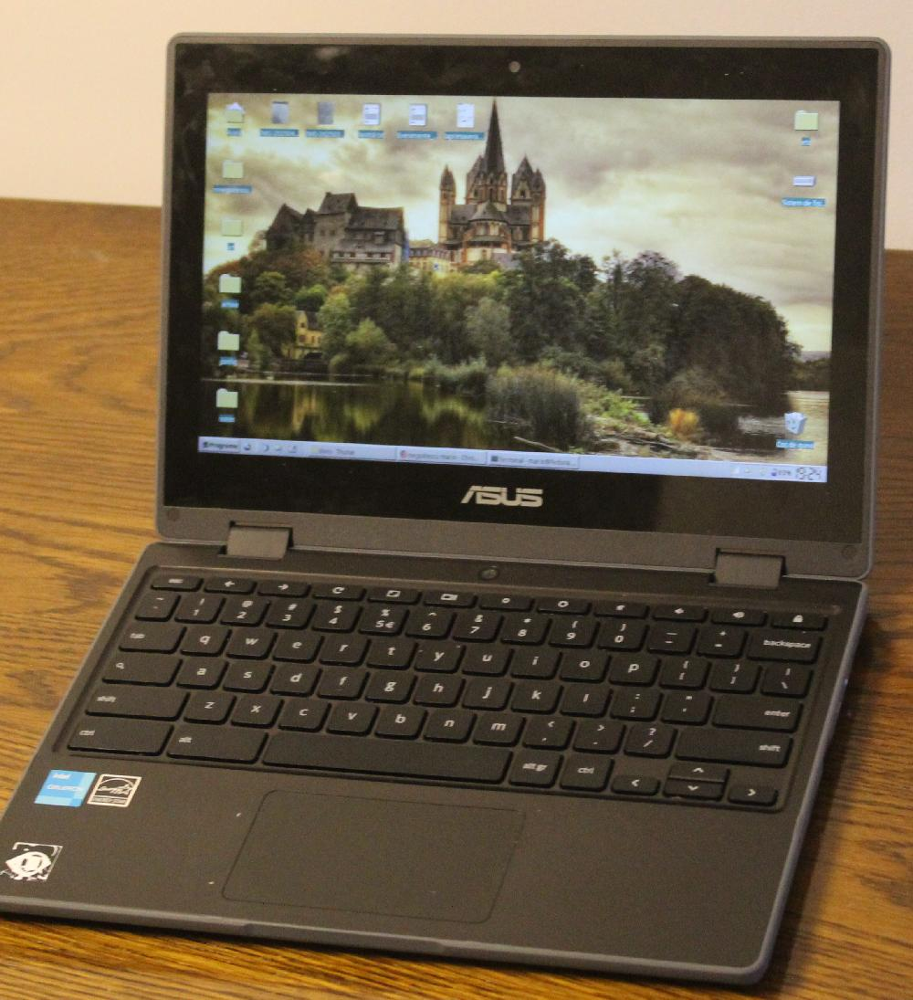

negoitescu mario — negoitescu.xyz
Linux pe un Chromebook (+ XFCE)
Recent, am decis să cumpăr un laptop 2-în-1 cu intenția de-al folosi pe post de tabletă/netbook pentru facultate, notițe și desene. După ceva căutare online, am decis să cumpăr un Chromebook, știind că majoritatea acestora pot rula Linux (cel puțin, cele care au o arhitectură x86). Modelul pe care l-am ales este un Asus CR1100FKA, despre care nu am găsit multe informații online, dar care apărea în lista de dispozitive care suportă MrChromebox, bootloaderul care permite instalarea Linux pe aceste calculatoare.
Imagine preluată de pe www.asus.com
La prima vedere, laptopul pare foarte bine construit. Are un exterior din plastic rigid care pare că ar rezista majoritatea șocurilor (totuși, nu voi verifica asta ;) ). Tastatura nu este nimic special dar are un clic destul de bun, iar touchpadul este destul de mic, dar utilizabil. De-asemenea, are un număr surprinzător de porturi, inclusiv unul pentru introducerea unui card SD, care m-a surprins foarte plăcut. Are două porturi USB Type C, care pot fi folosite pentru încărcarea laptopului de pe ambele părți, ceea ce a fost mai util decât aș fi crezut.
Ceea ce este cel mai important la acest laptop este, totuși, ecranul care permite atât input tactil cât și folosirea unui stylus, ceea ce îl face ideal pentru luarea de notițe sau desenarea unor schițe.
Desigur, singurul lucru care nu mi-a plăcut la acest laptop a fost sistemul său de operare preinstalat, ChromeOS, care (în afară de a-și spiona utilizatorii) nici măcar nu permitea folosirea aplicației de desen în modul offline. Așadar, am început destul de repede să instalez Linux pe el.
Procesul a fost surprinzător de ușor, scriptul menționat mai sus (MrChromebox) instalează o versiune a Coreboot care permite rularea de pe un stick USB sau card SD, iar instalarea unui sistem de operare a decurs ca în cazul oricărui alt laptop sau calculator obișnuit. Am trecut prin câteva încercări rulând mai multe distribuții de Linux, până când am decis să rulez Fedora Linux cu desktopul XFCE. Sistemul este surprinzător de stabil și nu am avut deloc probleme legate de software.
Prima dată când am instalat Linux pe acest Chromebook, am fost
surprins de faptul că aproape totul funcționează fără a mai trebui să
instalez un pachet sau driver suplimentar. Singurul lucru care a trebuit
rezolvat după instalare a fost ieșirea audio, care poate fi reparată
selectând ieșirea corectă din setările KDE (selectați
Jasper Lake HD Audio Pro sau [...] Pro 1
pentru căști). Atât ecranul tactil + stylus cât și modul tabletă
funcționează perfect, inclusiv rotirea automată a ecranului. Ambele
camere web sunt recunoscute (acest laptop are și o cameră exterioară pe
care o poți folosi în modul tabletă), microfonul funcționează fără
probleme, iar sistemul este foarte stabil. Procesul a fost identic și
pentru noua instalare, iar rezultatul la fel de plăcut. Scriu chiar
acest articol de pe acest Chromebook!
XFCE pe un Chromebook
Desigur, XFCE nu are toate funcțiile pe care le are un desktop mai „modern” cum ar fi KDE sau GNOME, dar este surprinzător de rapid și ușor de folosit. Pe parcurs, a devenit desktopul meu preferat.

Laptopul după instalarea GNU/Linux
Pentru luarea de notițe, am încercat câteva programe până am ajuns la Xournal++, care recunoaște stylusul fără probleme și are toate uneltele de care am nevoie.
Programul Xournal++ pentru notițe, desene și adnotarea PDF-urilor
În concluzie, sunt foarte mulțumit de această achiziție, iar instalarea Linux pe un astfel de laptop îi arată potențialul adevărat. Procesorul său (intel Celeron) pare destul de bun pentru a rula aplicații grafice sau de birou ușoare și chiar unele jocuri simple (personal, am încercat doar Mahjongg și Tetris :p).
email: negoitescu [arond] tutamail [punct] com